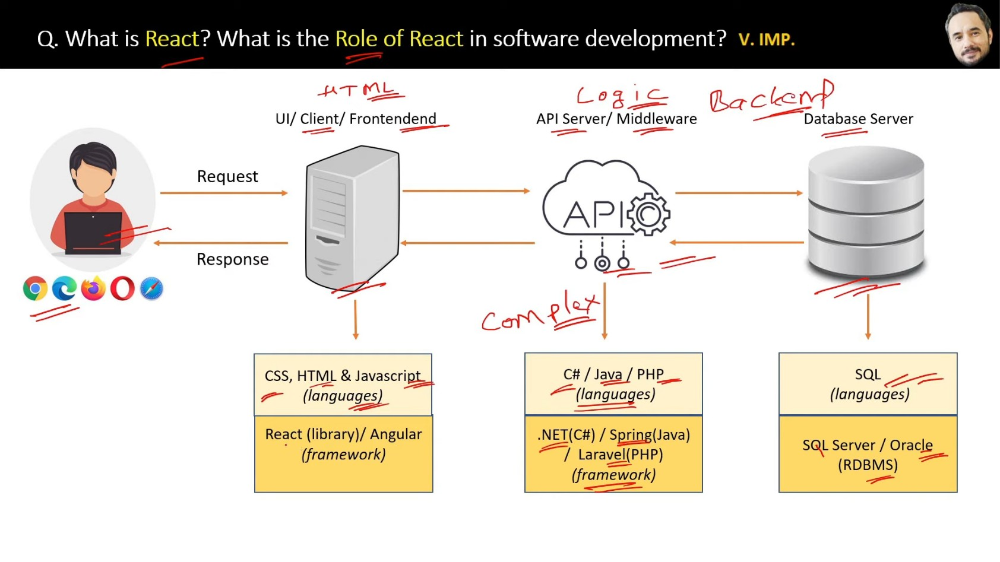

⚛️
React Revision Deck
126 Slides
🔍
All
React Fundamentals
JSX & Syntax
Architecture & Ecosystem
Components & Props Intro
Project Structure & Files
JSX Deep Dive & Babel
Functional vs Class Components
React Router & Navigation
Hooks: useState & useEffect
Hooks: useContext & Context API
Component Lifecycle Methods
Controlled vs Uncontrolled Forms
Code Splitting & Suspense
HOCs & Styling in React
React Ecosystem & APIs
Performance & Reactive Programming
Slide
1
of
126
React Fundamentals
What is React?
Go:
◀
Prev
Next
▶
⛶
Fullscreen

⬅
/
➡
or
Space
Navigate |
F
Fullscreen |
/
Search